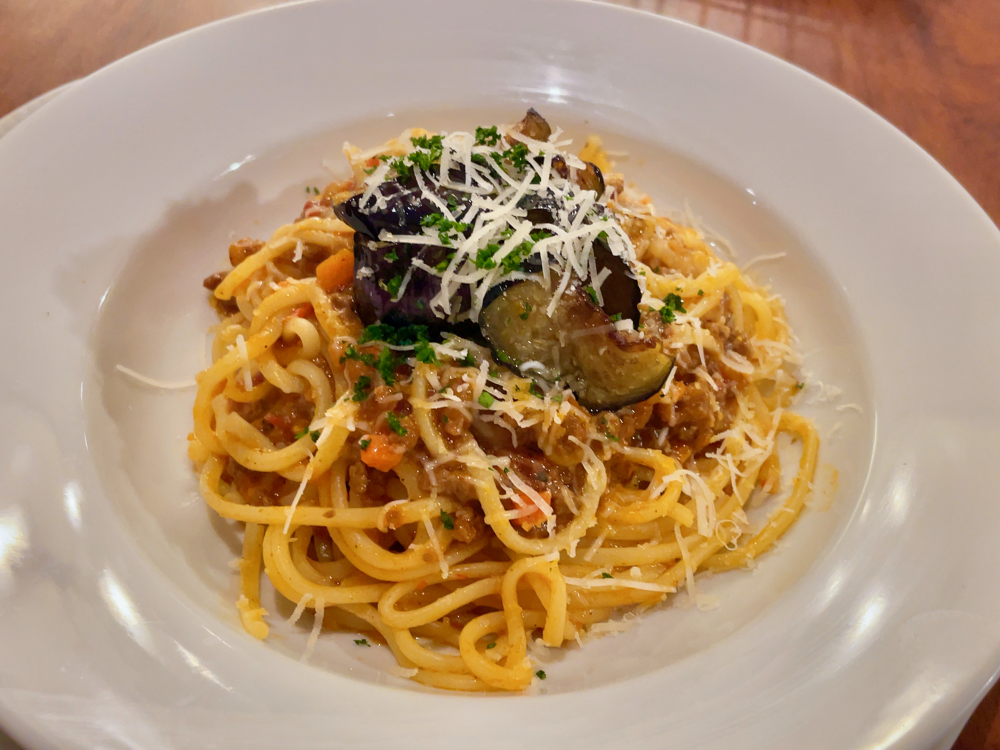

Easy and quick dish
Heat olove oil ina large skillet over mediumheat , cook and stir garlic until fragrant ,1 to 2 minutes
Add eggplant , cook , stir constanly until eggplant is softened about 5 minutes.
Add tomatoes and juice , cool until sauce is slightly reduced , about 20 minutes
Bring a large pot of slightly salted water to a boil
cook rigatoni in the boiling water , stiring occasionally until cooked through but firm to the bite , about 13 minutes , drain and transfer to serving bowl.
Pour sauce over pasta.